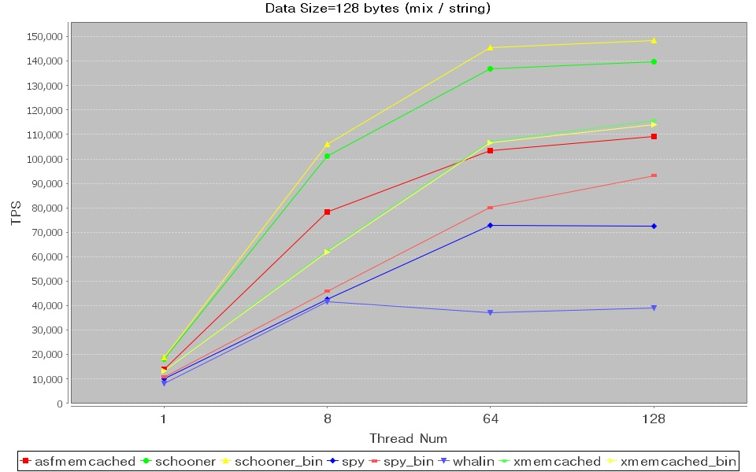
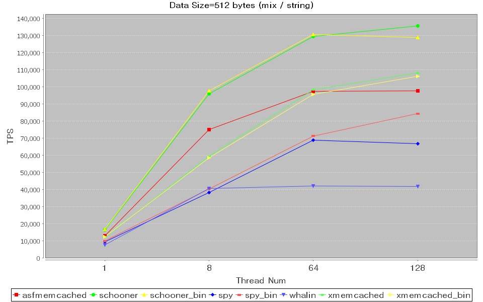
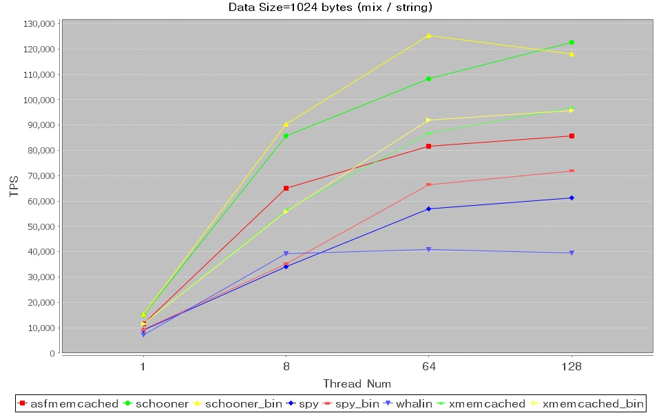
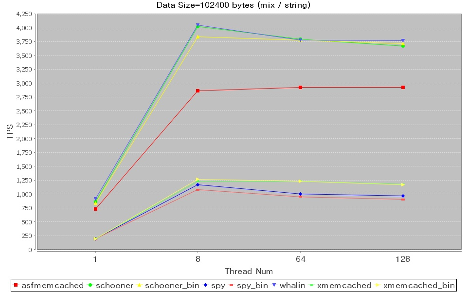
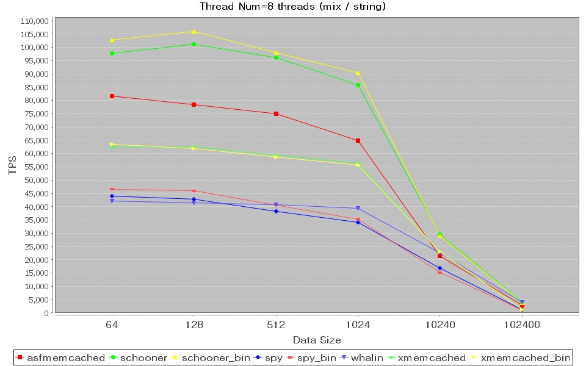
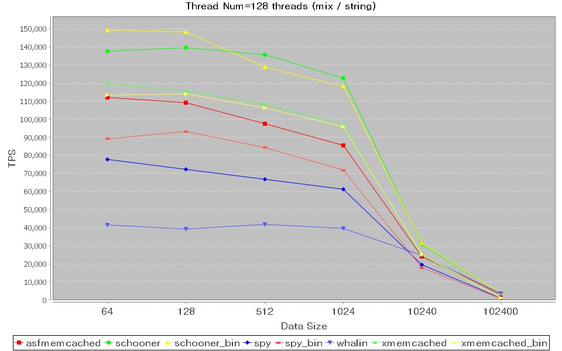

Performance Comparison between Java Memcached Client
There are several memcached clients
written in java programming language, including spymemcached,
Java-MemCached , Xmemcached and memcached-client-forjava(A
optimiezed Java-MemCached) etc.
The performance numbers of the 4 open
source memcached clients and schooner memcached client are presented
here to help you make choice.
Test Scenario
Single memcached server runs on a linux
machine.
A java client connect to memcached
servers,then start numbers of threads to repeat themself to store and
retrive data from memcachd concurrently,write 50% and read 50%,with no
miss rate.
Test Environment
- Software
- 1 Memcached Servers
- Version is 1.4.3, default install configuration.
- Start with option "-p 12000 -m 2048"
- Java Client
- JVM Version: Sun JDK 1.6.0_10 x86_64
- Both memcached text protocol and binary protocol is
covered(if supported).
- Schoonermemcached 1.0.2, max connection number eq thread number. (binary/udp
protocol supported)
- xmemcached 1.2.0 stable, connection pool size eq thread number. (binary protocol supported)
- Spymemcached 2.5rc1,default configuration. (binary protocol
supported)
- Whalin java client 2.0.1, max connection number eq thread number.
- Asfmemcached 2.5.2, max connection number eq thread number.
- JVM args: -server -Xmx1024m
- Xmemcached and Spymemcached are asynchronized implementations.So they have to set
operation timeout,both are set to 3 seconds.
- Hardware
- Server
- CPU: 8 x Intel(R) Xeon(R) CPU X5450 @ 3.00GHz
- O/S: 2.6.28.9 x86_64 GNU/Linux (CentOS release 5.2)
- RAM: 50 GiB
- NIC: 10G QLogic network
- Client (Hostname: Serpent)
- CPU: 8 x Intel(R) Xeon(R) CPU X5450 @ 3.00GHz
- O/S: 2.6.26.5 x86_64 GNU/Linux (CentOS release 5.2)
- RAM: 16 GiB
- NIC: 10G QLogic network
Test Result
Client and Servers on Different Machines
Part1 Compare by threads number



<


Part2 Compare by value size

